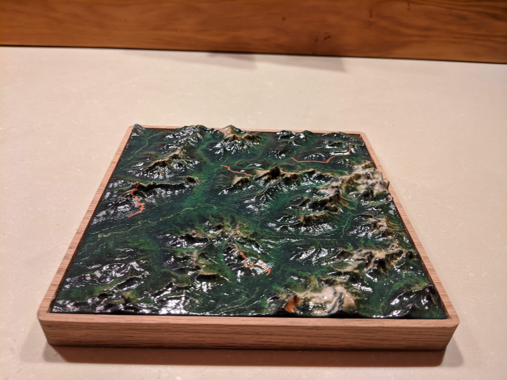

3D Printed Topology Maps
Posted on Fri 02 August 2019 in projects

I have been wanting to make a full color topographic map for quite a few years now, ever since I ran across This instructable. I had half heartedly attempted to follow those instructions, but ran into some issues with the required software. Recently I went on a few hikes with some family and wanted to give them something to remember it by, so I decided to finally follow through on this project.
The above tutorial is a bit outdated, as some of the required tools are no longer available. The following process is what worked for me, however it is fairly lazy. Not all the tools are free and open source, so I apologize for that. I was going for speed and (again) laziness.
Tools
Version is what I used.
- Photoshop (CC 2019)
- 3D Map Generator - Atlas (v1.3)
- QGIS (3.8)
Instructions
1. Prepare Terrain
Follow the instructions in this video to get a document loaded in photoshop for your location of interest. Make sure the area you are capturing has large borders (since you will be cropping down). Do not generate terrain yet if you want to add recorded GPS tracks or custom textures. If you just want the default satellite view you can finish the Atlas tutorial and proceed to the export section.

2. Modifying Textures
If you want to overlay custom textures on your model, such as recorded GPX tracks, you will need to do a little extra work. Start QGIS and then follow this tutorial to get the google satellite base layer imported. From there go to Layer -> Add Layer -> Add Vector Layer... (CTRL+SHIFT+V) and select your track files (mine were GPX). Once they are imported you can play with styling and scale to suit your needs. This is how mine ended up looking:

Once your base map and layers are styled you need to make a new layout: Project -> New Print Layout... (CTRL+P). In the new window select Add Item -> Add Map.... Right click on the background and select Page Properties.... Under Size select Custom and then enter the size you want your 3D print to be (I chose 150x150mm). Now select Add Item -> Add Map..., click and drag from top left corner to bottom right. Once your map is placed you can position it with the Move item content on the left toolbar. Set the scale under Item Properties to adjust zoom. Set the export resolution to something reasonably high, I chose 600dpi, but it probably doesn't matter that much. Select Layout -> Export as Image... and save as a PNG.

Head back over to photoshop and drop your export in. It will probably be scaled really small, but that's ok. Select both the screenshot and the QGIS export in the layers tab and then right click -> Rasterize Layers. Next, select the topology layer and the screenshot layer and lock them. Now select the QGIS export and the screen shot, go to Edit -> Auto-align Layers and leave everything as default. Your QGIS export should now be aligned on top of your screenshot from google maps. Photoshop will change the bounds of the image, but everything should still be aligned.

Next, unlock and delete the screenshot layer, then crop the image to the bounds of your QGIS export layer. Rename the QGIS image layer to texture. Finally, you can hit the magic Create New Terrain button in the Atlas toolbar.
3. Export
Once Atlas has processed your heightmaps and generated the model (mine took 15-20min) you can do things like play with saturation, relative heights, etc. Reference the Atlas tutorials for all the mods you can do. Once you are happy with the model expand the 3d_map_group and select the heightmap-ref-group layer. Select 3D -> 3D Print Settings..., Set:
Print to: ShapewaysPrinter: Sandstone - Full colorPrinter Units: MillimetersScene Volume: Whatever size you want
Now you are ready to hit the print icon (or 3D -> 3D Print...). This can also take a while to process, as it closes holes and thickens the walls. Once it finishes you can hit Export and your file will be saved in a .wrl file. This can be sent to any vendor that prints in full color sandstone, I used Shapeways to print a 150x150mm map, which cost about $70.
4. Mount
Hey look, a cool thingy! Mount it in something (I chose some scrap oak I had) and enjoy :)


Notes
- The exported .wrl does not have a nice flat base, which can make mounting tricky. I tried messing with the mesh in blender, but decided to fix it mechanically instead by filling in the base with epoxy.